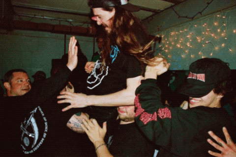

welcome to my photo site.

i began shooting 35mm film in april of 2022. at the time, i was working at a private archive that specialized in fine art photography, as well as photojournalism from late 20th century nyc. i had taken one photography class in high school that partially focused of shooting and developing film, so it felt right to re-learn the medium while i was handling old filmstrips, scanning them, and describing them on a daily basis. i bought an inexpensive automatic camera online and slowly began bringing it along to any occasions that felt special or interesting: daytrips, concerts, parties, to name a few.
photography has since grown into a consistent practice for me, and by embracing experimentation and the inevitability of "mistakes" (not to mention the support and guidance of other young female photographers), my work has continued to improve. recently, i've begun taking on paid gigs from musician friends, and am looking forward to how my photo practice might grow. what I lack in technical expertise - for now, at least - i hope to make up with a healthy intuition, what they call a "good eye", and a passion for learning.
this website contains some examples of my work, as well as other influences and inspirations. though it began as a project for my information technology class as i pursue my MSLIS, i would like it to become a platform where i can showcase some of my work without relying upon social media platforms and their constraints. i hope you enjoy it.
warm regards,
lexi
P.S. to contact me with photo questions, or even just to say hi, you can reach me at lexishorvath@gmail.com.